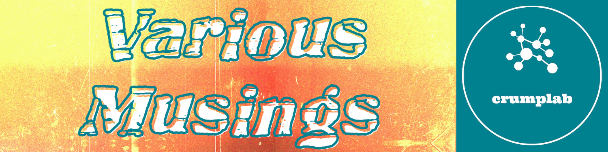

Blog
Various musings, usually about cognition, teaching, and other stuff, incomplete notes, digital breadcrumbs on scratchpads.

Various musings, usually about cognition, teaching, and other stuff, incomplete notes, digital breadcrumbs on scratchpads.
midiblender: Experiments in genRative MIDI mangling
music cognition
rstats
midiblender
generative music


Messing around with Hugging Face’s Stable Diffusion
stable diffusion
generative
art
python
Rstudio

Pondering my defaults for Quarto websites and reproducible research projects
Quarto
reproducible research
rstats
Observations on using LLMs for checking grammar, etc.
LLMs
OpenAI
Shiny
Rstats
RStudio
Assisted writing


Prompts for editing text with GPT
LLMs
Rstats
RStudio
Assisted writing

Choose-your-own adventure with ChatGPT
LLMs
Rstats
RStudio
Assisted writing

Writing an R tutorial with GPT in RStudio
LLMs
OpenAI
Rstats
RStudio
Assisted writing

Simulating Stroop effects with ChatGPT
LLMs
Stroop
ChatGPT


Convincing myself to run a Funkwhale pod
funkwhale
activitypub
audio
music


Unplanning my next course prep
ungrading
unplanning
teaching


Blogging with Quarto
quarto
Rstats
blogging


No matching items